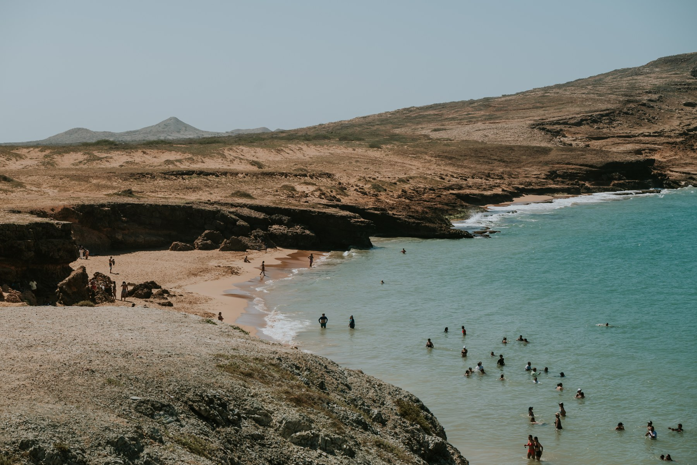

Aire que circula.
Mantén despejadas las rejillas de ventilación donde funcionan equipos a gas.
GAS NATURAL, SIN ENREDOS.
Entender el gas natural puede ser más sencillo de lo que crees. Empieza por algo que haces todos los días.
Quiero descubrirlo
El consumo también
cuenta tus hábitos.
01 / LO QUE HACES, CUENTA
Elige una situación de tu día y descubre qué relación tiene con el uso del gas.
Si cocinas durante más tiempo o utilizas varios quemadores, el volumen de gas utilizado puede aumentar.
Organiza lo que vas a cocinar antes de encender la estufa y apágala cuando termines de usarla.
Observa tus rutinas antes de comparar dos períodos de consumo.
UN DATO QUE VALE LA PENA ENTENDER
Registra un volumen acumulado. La diferencia entre dos lecturas ayuda a entender el gas utilizado; el valor de la factura es un cálculo distinto.
Si una lectura pasa de 250 a 262 m³, la diferencia es de 12 m³. Es un ejemplo de lectura, no un cálculo de factura: el consumo facturado puede incluir ajustes técnicos.
02 / PON A PRUEBA LO QUE SABES
Sin notas ni complicaciones. Elige una respuesta y aprende con cada intento.
Selecciona una respuesta.
03 / TRES RECORDATORIOS PARA TU CASA
Mantén despejadas las rejillas de ventilación donde funcionan equipos a gas.
Deja las modificaciones y reparaciones de la instalación a personal calificado.
Sigue las instrucciones de tus equipos y consulta los avisos de revisión de tu prestador.
NUESTRA TIERRA, NUESTRO DÍA A DÍA
Desde La Guajira, una invitación a conocer mejor lo que usamos en casa. Porque aprender algo pequeño puede cambiar la forma en que miramos lo cotidiano.
Volver al comienzo